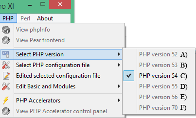

|
|
PHP Version Switching |
The Uniform Server Zero XI provides switching between PHP versions 5.2, 5.3, 5.4, 5.5, 5.6 and 7.0 to achieve this you need to download a suitable PHP plugin for each version (for example ZeroXI_php_5_2_17.exe, ZeroXI_php_5_3_27.exe, ZeroXI_php_5_4_35.exe, ZeroXI_php_5_5_19.exe, ZeroXI_php_5_6_3.exe, and ZeroXI_php_7_0_0_dev.exe) explained below.
Note: PHP Net decided to skip PHP version 6.0
Switching overview
|
PHP Switching In order to switch between PHP versions environoment variable PHP_SELECT is set to the selected PHP version. Valid values are php52, php53, php54, php55, php56 and php70. To ensure correct PHP configuration file is used environoment variable PHP_INI_SELECT is set to the selected PHP configuration file. Valid values are php_test.ini, php_development.ini and php_production.ini. The PHP_SELECT environment variable is used in the Apache configuration file httpd.conf to select the appropriate configuration block. Within the selected block environment variable PHP_INI_SELECT selects the configuration file to use. The Apache configuration code for PHP switching is shown on the right. PHP Plugins Related to PHP switching, when installing a plugin for an existing PHP series (PHP 52, 53, 54, 55, 56 or 70) it is assumed you want to use it instead of the one currently installed. This allows you to revert back to an older version number within the same PHP series. |
Apache configuration file: UniServerZ\core\apache2\conf\httpd.conf
# Environment variable ${PHP_SELECT} has a value of php52,
# php53, php54, php55 or php56. It is used in the following
# five define statements to select a PHP version to
# load as a module.
Define ${PHP_SELECT}
<IfDefine php52>
Loadfile ${US_ROOTF}/core/php52/ssleay32.dll
Loadfile ${US_ROOTF}/core/php52/libeay32.dll
Loadfile ${US_ROOTF}/core/php52/libmysql.dll
# Load PHP module and add handler
LoadModule php5_module "${US_ROOTF}/core/php52/php5apache2_4.dll"
AddHandler application/x-httpd-php .php
# Configure the path to php.ini
PHPIniDir "${US_ROOTF}/core/php52/${PHP_INI_SELECT}"
</IfDefine>
<IfDefine php53>
LoadFile ${US_ROOTF}/core/php53/icudt51.dll
LoadFile ${US_ROOTF}/core/php53icuin51.dll
LoadFile ${US_ROOTF}/core/php53/icuio51.dll
LoadFile ${US_ROOTF}/core/php53/icule51.dll
LoadFile ${US_ROOTF}/core/php53/iculx51.dll
LoadFile ${US_ROOTF}/core/php53/icutest51.dll
LoadFile ${US_ROOTF}/core/php53/icutu51.dll
LoadFile ${US_ROOTF}/core/php53/icuuc51.dll
# Load PHP module and add handler
LoadModule php5_module "${US_ROOTF}/core/php53/php5apache2_4.dll"
AddHandler application/x-httpd-php .php
# Configure the path to php.ini
PHPIniDir "${US_ROOTF}/core/php53/${PHP_INI_SELECT}"
</IfDefine>
<IfDefine php54>
LoadFile ${US_ROOTF}/core/php54/icudt51.dll
LoadFile ${US_ROOTF}/core/php54/icuin51.dll
LoadFile ${US_ROOTF}/core/php54/icuio51.dll
LoadFile ${US_ROOTF}/core/php54/icule51.dll
LoadFile ${US_ROOTF}/core/php54/iculx51.dll
LoadFile ${US_ROOTF}/core/php54/icutest51.dll
LoadFile ${US_ROOTF}/core/php54/icutu51.dll
LoadFile ${US_ROOTF}/core/php54/icuuc51.dll
# Load PHP module and add handler
LoadModule php5_module "${US_ROOTF}/core/php54/php5apache2_4.dll"
AddHandler application/x-httpd-php .php
# Configure the path to php.ini
PHPIniDir "${US_ROOTF}/core/php54/${PHP_INI_SELECT}"
</IfDefine>
<IfDefine php55>
LoadFile ${US_ROOTF}/core/php55/icudt51.dll
LoadFile ${US_ROOTF}/core/php55/icuin51.dll
LoadFile ${US_ROOTF}/core/php55/icuio51.dll
LoadFile ${US_ROOTF}/core/php55/icule51.dll
LoadFile ${US_ROOTF}/core/php55/iculx51.dll
LoadFile ${US_ROOTF}/core/php55/icutest51.dll
LoadFile ${US_ROOTF}/core/php55/icutu51.dll
LoadFile ${US_ROOTF}/core/php55/icuuc51.dll
# Load PHP module and add handler
LoadModule php5_module "${US_ROOTF}/core/php55/php5apache2_4.dll"
AddHandler application/x-httpd-php .php
# Configure the path to php.ini
PHPIniDir "${US_ROOTF}/core/php55/${PHP_INI_SELECT}"
</IfDefine>
<IfDefine php56>
LoadFile ${US_ROOTF}/core/php56/icudt51.dll
LoadFile ${US_ROOTF}/core/php56/icuin51.dll
LoadFile ${US_ROOTF}/core/php56/icuio51.dll
LoadFile ${US_ROOTF}/core/php56/icule51.dll
LoadFile ${US_ROOTF}/core/php56/iculx51.dll
LoadFile ${US_ROOTF}/core/php56/icutest51.dll
LoadFile ${US_ROOTF}/core/php56/icutu51.dll
LoadFile ${US_ROOTF}/core/php56/icuuc51.dll
# Load PHP module and add handler
LoadModule php5_module "${US_ROOTF}/core/php56/php5apache2_4.dll"
AddHandler application/x-httpd-php .php
# Configure the path to php.ini
PHPIniDir "${US_ROOTF}/core/php56/${PHP_INI_SELECT}"
</IfDefine>
<IfDefine php70>
LoadFile ${US_ROOTF}/core/php70/icudt53.dll
LoadFile ${US_ROOTF}/core/php70/icuin53.dll
LoadFile ${US_ROOTF}/core/php70/icuio53.dll
LoadFile ${US_ROOTF}/core/php70/icule53.dll
LoadFile ${US_ROOTF}/core/php70/iculx53.dll
LoadFile ${US_ROOTF}/core/php70/icutest53.dll
LoadFile ${US_ROOTF}/core/php70/icutu53.dll
LoadFile ${US_ROOTF}/core/php70/icuuc53.dll
# Load PHP module and add handler
LoadModule php7_module "${US_ROOTF}/core/php70/php7apache2_4.dll"
AddHandler application/x-httpd-php .php
# Configure the path to php.ini
PHPIniDir "${US_ROOTF}/core/php70/${PHP_INI_SELECT}"
</IfDefine>
|
UniController PHP Switching
PHP Switching
Note 1: For the new settings to become effective you must restart the Apache server. |
 |
Installing a PHP plugin
Installing is a misnomer! Nothing is installed to your PCs registry all files are extracted to their appropriate location within the UniServer folder structure.
The extraction procedure is identical for all plugin versions, proceed as follows:
|
Install PHP plugin
|
Clean Install There are situations where you want to start from a known For example to completely remove 5.4.35 delete folder |
|
Enable The PHP plugin Before the plugin is recognised it requires selecting as follows:
|
Important information
Following lists important information that may catch you out:
1) Over writing an existing series will replace all configuration files. If you have made changes to the configuration files save these files before installing a new version of the same series.
2) Extension artefacts! When installing over an existing series there may be some extensions that are not included with the existing version. These extensions are not deleted and may be incompatible with the new version. It is recommended to perform a clean install as mentioned above.
3) PHP version 5.2.17 has been included allowing legacy code to be tested. The following restrictions apply: SSL functions are not supported, compiled SSL version is incompatible with Apache version. You cannot run Apache as a service when PHP 5.2.17 selected because of configuration syntax issues and incompatible SSL version. Downgrade phpMyAdmin to 4.0.10 or older version (e.g. Install ZeroXI_phpmyadmin_4_0_10.exe from archive)